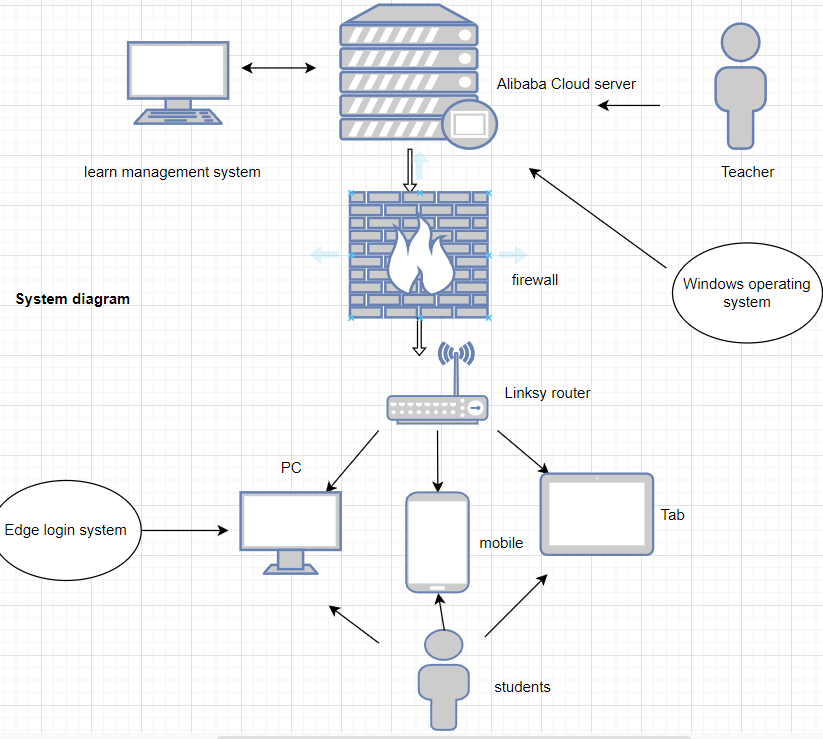

.jpg)
I will customize the learning management system for a school in Ningbo. Because the previous management of the school is relatively backward, I will provide this school with a new school management system. The hardware that will be used in the establishment of web and WiFi management system. The software is: online school system, cloud storage software and firewall. Our value is that users are easy to use and can store a large amount of user information. After the learning management system is established, users can access the learning management system to query information after passing through the firewall I will first determine the personnel structure involved in the work, then draw up a plan, then build the basic system, improve the basic system, and finally complete the system

| Ken（WenZuojun） | Neymar(JinPeng) | |
|---|---|---|
| Name this system | Learning management system | Learning management system |
| What are the system objectives | Students view the course plan | To help students plan |
| List 3 essential system features and components | 1. Alibaba cloud services store information 2. Firewall protection server 3. Linksy router sends information | 1. Alibaba cloud services store information 2. Firewall protection server 3. Linksy router sends information |
| List 3 essential hardware from this system | 1. Alibaba cloud services store information 2.Tab 3. Linksy router sends information | 1. Alibaba cloud services store information 2.mobile 3. Linksy router sends information |
| List 3 essential software from this system | 1. Firewall 2.Edge 3.Windows operating system | 1. Firewall 2.Edge 3.Windows operating system |
| List 2 external system components | 1.Linksy router 2.pc | 1.Tab 2.Linksy router |
| List 2 system benefits | 1. Be able to directly view the information of the system 2. Change quickly in case of problems | 1. Be able to directly view the information of the system 2. Students can quickly enter the system website |
| List 2 project difficulties | 1. Low safety 2. Too few login methods | 1. Low safety 2. It is difficult for students to feed back system problems |